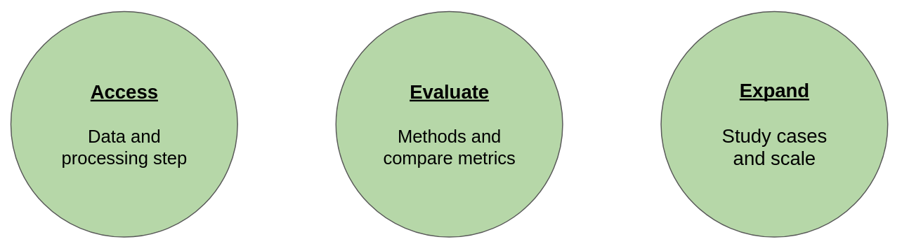

Ocean Observation Science Toolkit: SSH Data challenge Design#
Overall presentation#
New concepts, Tools and Features:#
Data challenge features:#
This implementation offers the following improvement over the previous implementation:
Data access made easier (single command to download the prepared data)
Reproducibility and constistence (of metrics and data prep)
Automatic leaderboard computation (when adding or updating a method or updating the metrics)
Resusability of processing steps (data, metrics) for other use-cases made easy
Concepts:#
Those new features are made possible through the use of the following concepts:
Versioned data: being able to store, access and compare different version of a dataset
Workflow management: orchestrating the tasks involved in processing the data and generating the results
Continuous integration: Automatically running tasks when changes are made
Application packaging: Providing portable and customizable interfaces to the software
Tools#
In order to implement the previous concepts, the following tools and library
-
python <-> configuration workflow (share code, adapt config)
CLI integration
easy // computing (local, cluster), logging
dvc provides:
data versioning via git indexed cloud storage
workflow management
-
continuous integration
Feature Showcase#
We provide through the following notebooks and associated 5 min walkthrough videos demonstrations of the features brought by this implementations 
Versioned data access and reproduction for data challenges#
Metrics computation and automated leaderboard update#
Reusing the pipelines for a global usecase#
Table of Content#
Installation
Getting started